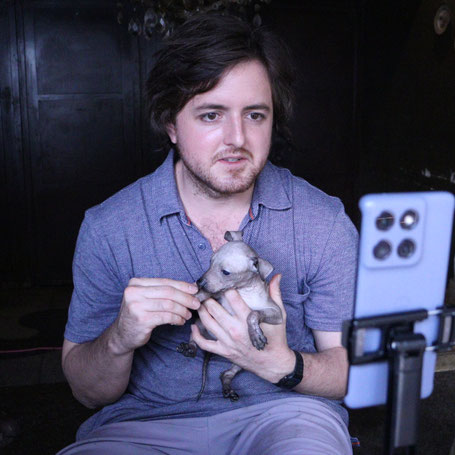
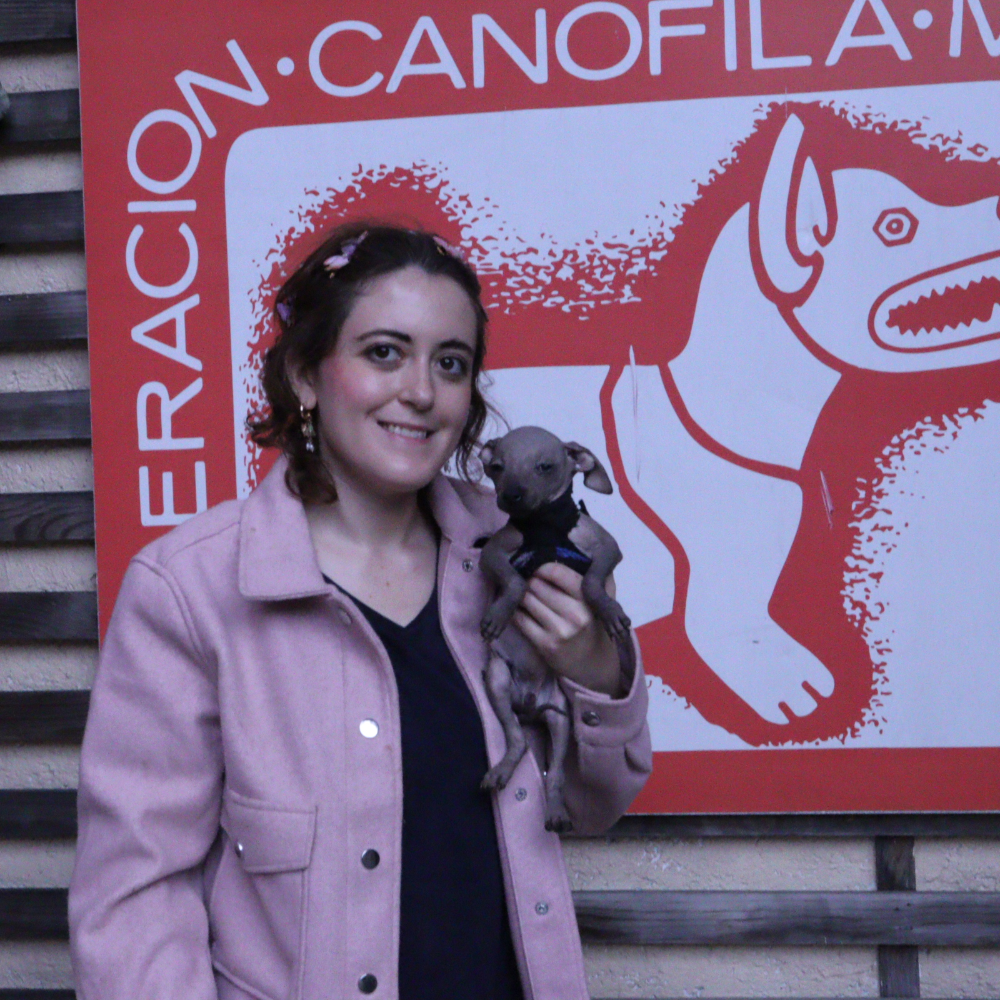

The Nahuatl name Xoloitzcuintli can feel formidable to an international reader; many families simply say “Xolo.” Yet the animal behind the name is more important than the aura around it. A Xolo is a dog that grows, learns, forms attachments and needs individual care. It is not an archaeological object that somehow survived intact, nor a myth brought to life.
It can, however, be understood as a living biocultural archive. The phrase describes a relationship: biological inheritance continues through living bodies, while human communities preserve, forget and reinterpret what those bodies mean. Archaeological remains, funerary traditions, twentieth-century art, modern canine records and family photographs all belong to the Xolo’s story, but they do not all provide the same kind of evidence.
Xolos Ramírez approaches that continuity through documented breeding, physical identification and a complementary digital record. The hierarchy matters. Technology can connect and verify references; it cannot replace the dog, biological lineage, pedigree, veterinary records or the institutions responsible for them.
“Every Xoloitzcuintli is a living pyramid.” A contemporary editorial concept developed by Xolos Ramírez
This is not presented as a pre-Hispanic expression. It is our present-day metaphor. A pyramid holds accumulated layers of time; a Xolo carries ancestry in a body that is never static. The comparison is valuable only when its modern origin remains explicit.
A living presence, not a frozen relic
Mexico’s National Museum of Anthropology has described native dogs as part of the country’s biocultural heritage. That term brings biology and culture together without collapsing one into the other. Xolos and other Mexican dogs were participants in domestic life, economic practices, ritual worlds and funerary contexts. People also turned them into images: ceramic figures, vessels, sculptures and later paintings.
An object in a museum can document an ancient representation. A bone can support an archaeological identification. A colonial account can preserve an observer’s description, along with that observer’s assumptions. A religious narrative tells us how a community understood existence; it does not function as scientific proof of the supernatural. Responsible cultural writing keeps those categories visible.

Xólotl, Mictlán and a dog that crosses boundaries
In Mesoamerican traditions, dogs appear in accounts of death and the journey to the underworld. Mexico’s National Institute of Anthropology and History, or INAH, summarizes historical sources in which a dog assists the deceased on the way to Mictlán, including a difficult river crossing. Museum collections also preserve representations of Xólotl, a deity associated with the underworld and described as the twin of Quetzalcóatl.
For readers outside Mexico, this distinction is essential: Mictlán belongs to documented religious worldviews, not to a claim that a supernatural passage can be scientifically observed. The image of the guiding dog matters because communities used it to think about mortality, companionship and transition.
The Nahuatl word tonalli also resists easy translation. It participates in ideas of vital force, warmth, calendrical identity and destiny, but it is not a simple equivalent of the Western “soul.” Xolos Ramírez uses Tonalli as the name of a contemporary technological and community project; that choice is an interpretation inspired by Mexican cultural vocabulary, not a claim of direct institutional continuity with the Nahua past.
What archaeology can — and cannot — tell us
The exhibition Xolos, compañeros de viaje (“Xolos, Traveling Companions”) brought together archaeological, ethnographic and artistic objects as well as skeletal remains. The materials point to dogs in both ceremonial and everyday settings across different regions and cultures. There was no single, timeless “Mesoamerican view of the dog”; meanings varied across place, period and community.
A UNAM review describes approximately two thousand years of clearly documented presence for the Mexican hairless dog, drawing on archaeological materials and archaeozoological study. Popular accounts sometimes repeat a seven-thousand-year history as settled fact. The available sources warrant more careful wording. “Documented for roughly two millennia” does not identify an exact first birth; it names the chronological range the cited evidence can support with confidence.
The hairless body, explained without folklore
The hairless Xolo’s appearance has a heritable basis. Research on hairless dogs links a variant involving the FOXI3 gene to canine ectodermal dysplasia, affecting hair development and dentition. This helps explain why hairless individuals may be missing certain teeth or have different tooth shapes. These dental patterns are biological traits, not mystical markers and not details that responsible breed education should hide.
Exposed skin calls for care adapted to weather, activity and the individual dog. It does not require exotic physiology. A Xolo often feels warmer to the human hand because there is no coat insulating direct contact with the skin, not because its internal temperature is extraordinary. Claims that the breed regulates heat by sweating through the abdomen are also inaccurate. Normal canine thermoregulation, especially panting and environmental exchange, remains the relevant framework.
Traditional accounts sometimes describe the Xolo’s warmth as therapeutic. Those practices and beliefs belong to cultural history; they should not be turned into unproven medical claims. A dog’s comforting presence can be meaningful without being marketed as a clinical treatment.
Biology does not produce one universal temperament, either. Some Xolos may be reserved, others more immediately social; learning, age, health and experience all shape behavior. A cultural portrait of the breed should never erase the individual standing in front of us.
Near disappearance and modern recognition
The Xolo’s survival was not a smooth procession from antiquity to the present. The National Museum of Anthropology describes a period of near extinction under colonial rule, followed by a modern resurgence. In the twentieth century, Mexican muralism and the broader nationalist art movement reclaimed the dog as a visible link to Indigenous heritage. Artists of the Mexican School of Painting placed Xolos in canvases and in their homes, helping transform the breed into a national cultural emblem.
Cultural rescue was accompanied by modern canine institutions. The Fédération Cynologique Internationale lists Mexico as the country of origin, records definitive recognition in 1961 and recognizes Miniature, Intermediate and Standard sizes. This formal standard is not an untouched pre-Hispanic rulebook. It is a modern canine framework developed to describe and conserve the breed.
The contemporary Xolo therefore holds several histories at once: biological descent, organized recovery, artistic reinvention and everyday family life. None makes the others unnecessary.
Why Xolos Ramírez calls the Xolo a living pyramid
“Living pyramid” is a way of thinking about stewardship. Monumental architecture outlives individual builders and demands ongoing care. A lineage also exceeds a single household, but it continues through vulnerable organisms rather than stone. Every breeding decision, health record and family experience adds a layer to what later generations will be able to know.
This metaphor has led Xolos Ramírez to other modern concepts: the Living Lineage Archive, xolosArmy Network and Tonalli Civilization. They are contemporary names for a breeding, documentation and community vision. They are not archaeological categories or revived pre-Hispanic institutions. Their credibility must come from transparent present-day practice.
From living body to digital reference
A trustworthy record begins in the physical world. The digital layer becomes meaningful only when it points back to identification and documentation produced elsewhere. For Xolos Ramírez, the sequence is deliberate:
- The living dog. An individual with its own health, development, behavior and welfare needs.
- Biological lineage. Genealogical relationships to parents and preceding generations.
- Physical identification. A readable microchip number connects the record to the dog in the real world.
- Canine and veterinary documentation. Pedigree, registration, vaccines, certificates and clinical records support different claims.
- A complementary digital record. A Lineage NFT can connect references and files for consultation and traceability.

A pedigree records genealogy within the relevant canine system. A microchip supports physical identification. Veterinary documents record procedures or health observations at specific times. Each answers a different question. Their value increases when they are connected without pretending they are interchangeable.
The Lineage NFT: an additional memory layer
The Xolos Ramírez Lineage NFT is designed as a unique digital profile that may connect identity, microchip number, documented genealogy, photographs and references to other files. A record on the eCash network can show that a token was issued, associate that event with a date and address, and display transfers between wallets.
Related files may use IPFS. In that system, a Content Identifier, or CID, is derived from the content: altering the file changes its identifier. This supports integrity checks. It does not guarantee eternal availability. Copies or pinning services must continue to host the content. “Verifiable and resistant to silent modification” is therefore more accurate than “permanent.”
The digital record does not independently prove: genetic purity, pedigree validity, current health or absolute legal ownership of the dog.
It is also not presented as a speculative asset. Its role in this model is to connect references and support the traceability of a documentary history.
Blockchain can verify properties of the digital record. Confidence in the biological information still depends on the animal, physical identification, source documents and the professionals and institutions that issued them. That boundary is not a weakness; it is the basis of an honest system.
A community that continues the archive
The Living Lineage Archive imagines memory continuing after a Xolo joins its family. Photographs, gatherings and milestones can expand the story over time. Tonalli’s community vision may eventually give families a place to preserve those moments while keeping clear distinctions between family memory, official records and technical verification.
This is not an attempt to recreate a pre-Hispanic institution. It addresses modern forms of loss: scattered files, disappearing platforms, broken links and family histories that become difficult to reconstruct. Responsible custody, replicated storage and verifiable references can help, provided the infrastructure is maintained and every claim remains open to inspection.
The guardian becomes a bridge again
In Mesoamerican traditions, the dog was represented as a companion across worlds. In the contemporary reading proposed by Xolos Ramírez, the bridge connects ancestral memory → living organism → future generations → digital documentation.
The metaphor works because the differences remain visible. Mictlán belongs to a historical religious tradition. Microchips, pedigrees, CIDs and blockchains belong to modern systems of identification and verification. They meet only in the way we now choose to narrate and protect continuity.
The Xolo remains at the center because it is alive. Before the symbol comes the body; before the token comes genealogy; before the archive comes the relationship between an animal and the people responsible for its care. Digital memory is useful when it makes that chain of responsibility easier to see — never when it claims to replace it.
Sources
- INAH: “Xoloitzcuintle: compañero en el viaje al Mictlán” (Spanish).
- National Museum of Anthropology: “Xolos, compañeros de viaje” (Spanish).
- UNAM Gazette: “El xoloitzcuintle: un sobreviviente de dos mil años de edad” (Spanish).
- Kupczik et al. (2017): “The dental phenotype of hairless dogs with FOXI3 haploinsufficiency”, Scientific Reports.
- Fédération Cynologique Internationale: Xoloitzcuintle (234).
- IPFS Docs: Content Identifiers (CIDs) and best practices for NFT data.
- Xolos Ramírez: NFT de Linaje Xoloitzcuintle, the project’s conceptual document on identity, genealogy and digital memory (Spanish).
Continue exploring
Read more about Mexico’s Xolo dog or learn how Xolos Ramírez documents each dog and supports its family.